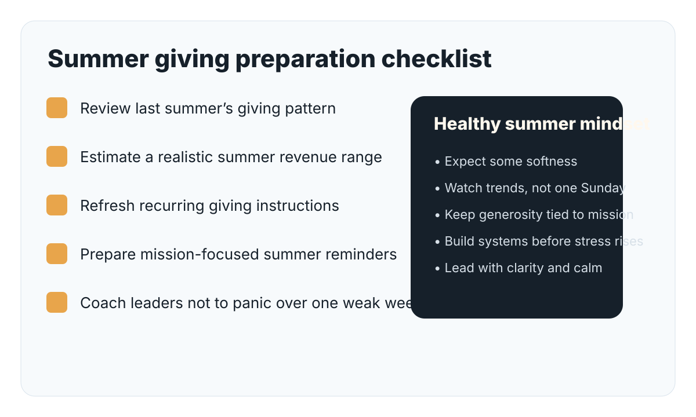
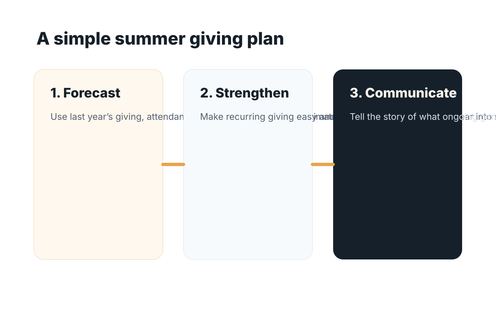

For many churches, summer brings a noticeable dip in giving. Attendance patterns change, families travel, routines loosen, and what felt steady in the spring can suddenly feel uncertain by June or July.
The good news is that a summer drop in giving does not have to become a summer crisis. Churches that prepare early are usually able to navigate the season with more peace, stronger communication, and fewer reactive decisions.
1. Expect it instead of being surprised by it
One of the biggest mistakes churches make is acting shocked by a predictable pattern. Summer giving fluctuations are common. If your church has seen them before, treat them as a planning reality rather than an emergency.
Review last year’s giving patterns and ask:
- How much did giving soften in June, July, and August?
- Did online giving stay steadier than in-person giving?
- Were there one or two unusually weak weekends that distorted the whole picture?
- Did larger gifts come later and create a recovery that leadership forgot about?

2. Review your giving trends now
Before summer arrives in full force, look at the patterns that matter most:
- last summer’s giving totals
- attendance trends
- online and recurring giving consistency
- large-gift timing
- donor retention patterns
This helps you distinguish between a normal seasonal dip and a deeper issue that may need pastoral or financial attention.
3. Strengthen recurring giving
Summer is one of the best times to encourage consistent, automated generosity. If your church has online or recurring giving options, make sure they are easy to find, easy to use, and mentioned regularly without pressure.
Many people are willing to remain consistent in their giving, but they need simple tools and timely reminders.
4. Communicate early and calmly
Churches often wait too long to talk about summer giving, then communicate with anxiety when numbers tighten. A better approach is to communicate early with confidence and clarity.
Remind your church:
- ministry continues during the summer
- missions and local impact do not pause
- generosity is part of faithful discipleship in every season

5. Connect giving to mission, not just budget
People respond better when they understand what their giving supports. Instead of only saying, “summer giving usually drops,” tell the story of what continued generosity makes possible:
- children and student ministry momentum
- local outreach and benevolence
- worship and care ministries
- preparation for fall ministry momentum
Mission-centered communication is stronger than budget-centered anxiety.
6. Avoid overreacting too early
A few light weeks do not always mean a major problem. Summer giving can be uneven. Wise leaders monitor trends without panicking over one week or one Sunday.
7. Use summer as a discipleship opportunity
Summer is not only a financial challenge. It can also be a discipleship opportunity. This is a chance to teach that generosity is not just tied to attendance or convenience. Faithful stewardship is part of following Jesus year-round.
Final thought
You may not be able to prevent every summer dip in giving, but you can prepare for it wisely. Churches that plan ahead, communicate clearly, and keep generosity connected to mission are much better positioned to lead with confidence.
Summer does not have to weaken momentum. With the right preparation, it can become another season of faithful stewardship.